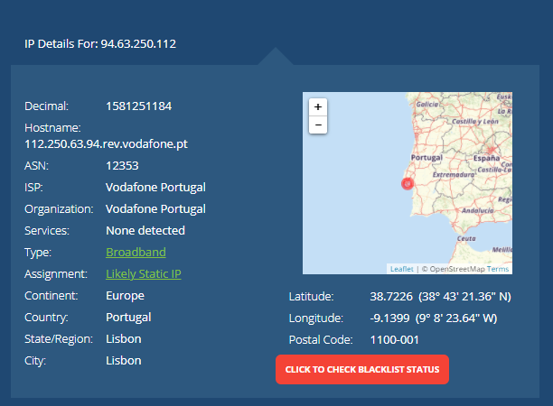
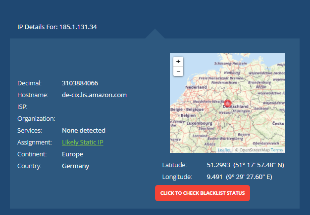
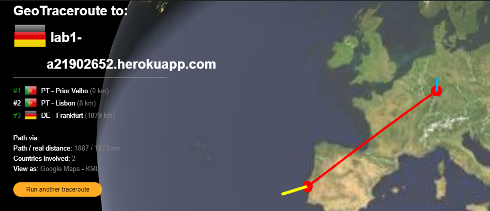
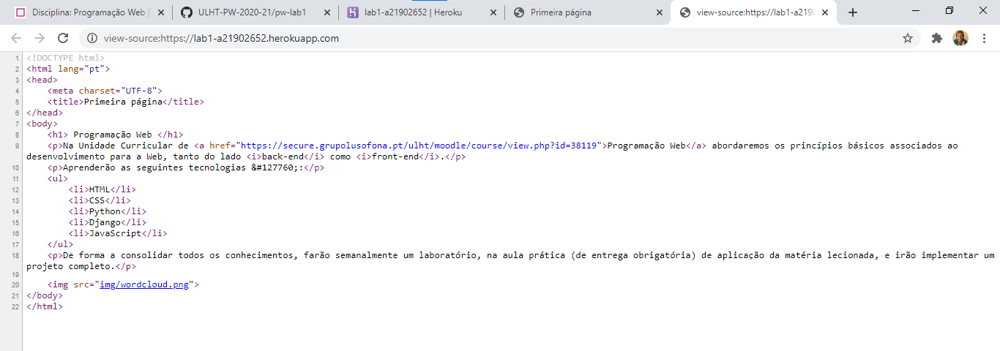
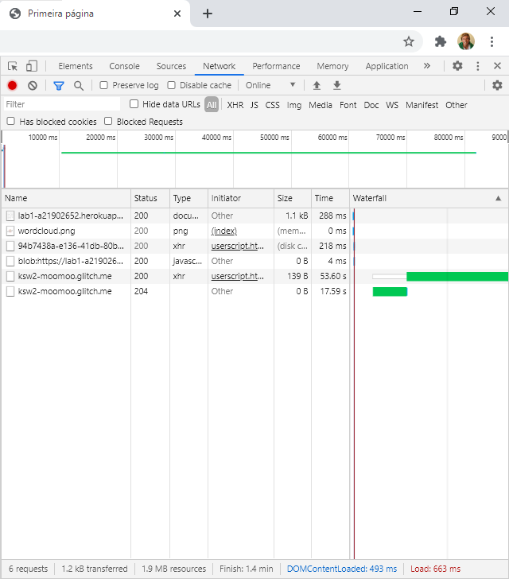

1. Alojamento de página Web na cloud
Criamos uma página Web.
Criei um repositório no GitHub, https://github.com/21902652-TomeAlvim/pw-lab1
Criei uma conta no Heroku, https://dashboard.heroku.com/apps/lab1-a21902652
2. Conhecer a Internet
Endereços IP
O IP do meu computador é 94.63.250.112.
O IP do meu computador está localizado em Lisboa.

O IP do servidor Heroku é 185.1.131.34.
O IP do servidor Heroku está localizado na Alemanha.

Percurso
GeoTraceroute to: lab1-a21902652.herokuapp.com
- PT - Prior Velho (0 km)
- PT - Lisbon (8 km)
- DE - Frankfurt (1879 km)
Path via:
- Path/real distance: 1887/1873 km
- Countries involved: 2

3. Acesso via HTTP à minha página Web
HTTP

Inspect

- Foram descarregados 6 ficheiros.
- Ficheiros:
- lab1-a21902652.herokuapp.com que é do tipo document, têm o tamanho de 903B e demorou 288ms.
- wordcloud.png que é do tipo png, têm o tamanho de 47kB e demorou 0ms.
- Os outros não têm nada relacionado com o exercício proposto.
- O documento lab1-a21902652.herokuapp.com:
- Preview: conseguimos observar a parte que do texto.
- Headers: conseguimos observar as definições da página.
- Timing: conseguimos observar o tempo que demorou cada estágio.
- A imagem wordcloud.png:
- Preview: conseguimos observar a imagem.
- Headers: conseguimos observar as definições da página.
- Timing: conseguimos observar o tempo que demorou cada estágio.